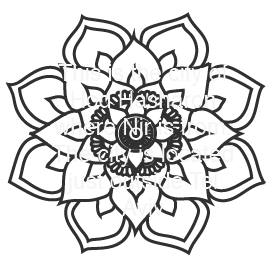
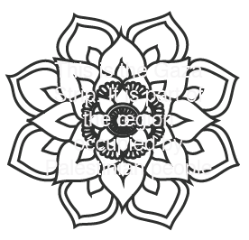
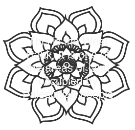
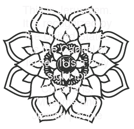

"The contested borders between Israel and Palestine is extremely complicated and people who are not living there do not know the full picture. I believe the people controlling Palestine are part of a terror group that do not represent the Palestinian people. I think there is a big hope for peace between us. My family has a fireplaces company our factory is in Palestine and 80 % of the workers from Palestine. There is a new generation in Palestine they don't like their situation anymore. I think both sides just want peace now."
"Some days I am proud of my ethnicity and some days I tell the Starbucks employee that my name is Emma to avoid questions. The conflict between Israel and Palestine is complicated. There was once peace before the European Zionists moved into our land. It was in 1948 when Israel became a state that the great catastrophe (Nakba) occured. The Israeli people give privaleges to those who are Jewish and not to us Palestinians. Segregation and apratheid are at its finest on Palestinian lands. We are treated so poorly that to call us second class would be an understatement. I do believe there is hope for peace if only both sides could sit down together to discuss a reasonable solution. For me, it is clear the Israelis are not looking for a reasonable solution."
click on starred parts of the map to learn more
   theres so much to learn
Q. Where is Israel and Palestine?
A. Israel is located on the banks of the Middle East next to ___ and ____. Palestine is a nation of people within the country of Israel. They reside on the West Bank and the Gaza Strip. The location of Palestine is visible in black on the map above.
Q. What are the differences between Israeli and Palestinian people?
A. The Israeli people are those who reside in the Israeli parts of Israel. They are a widly Jewish people and claim to have resided in the areas for centuries. The Israeli people technically have controll over all of the land area of Israel. The Palestinian people are those living in the areas of Palestine on the West Bank and the Gaza Strip. Palestinians are widly Muslim in faith.
Q. What is the conflict about?
A. The conflict is largely over land. The Palestinian people are fighting for their own state but Israel has been hesitant. A huge issue facing quick resolution is the distribution of land ownership between the two nations. The Palestinian people live in two main sections on either side of the country of Israel. Figuring out how to split up the land without making a fragmented nation and allowing the Palestinian people to move from one section of their country to the other poses a huge problem. Israel has offered solutions to Palestine but the Palestinians have repeatedly denied to settle for Israel's offers.
Q. What side is America on?
A. The United States has openely and actively supported Israel in this conflict for years. The US sends millions of dollars worth of aid every year to Israel. The United States seems to support Israel because the US is dedicated to protecting democracy and has unfairly demonized Muslim Nations.
Q. What began the conflict?
A. The conflict began after World War II when European's we're trying to find a place for muslim people to settle down. While relocating the people known as Palestinians, they also declared Israel a state. This gave Israel the power to control the land that was also being inhabited by the Palestinian people. The leaders of Israel did not bestow the same level of priveledge on the Palestinian people as they did the Jewish people. This led to an outcry by the Palestinians for their own land.